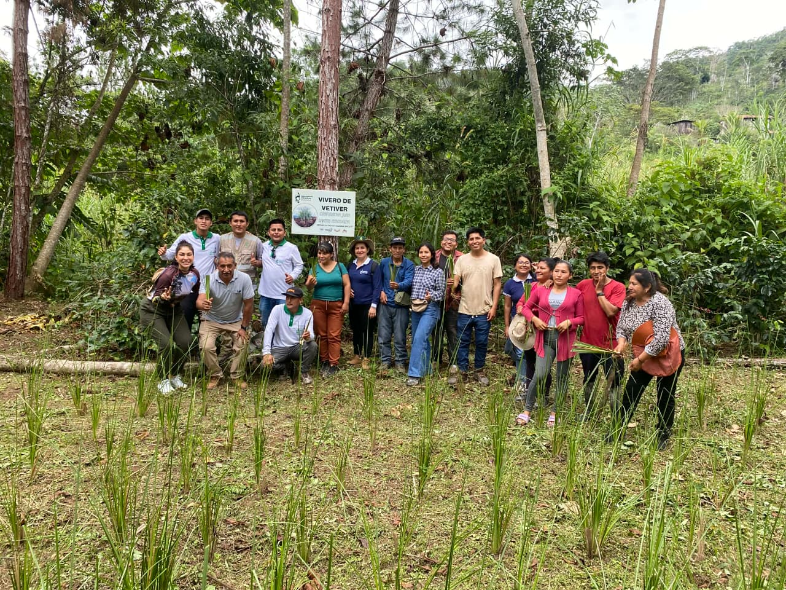

Beneficios
- Protege el suelo de la erosión
- Mejora la estructura del terreno
- Filtra contaminantes del agua
Una planta que protege el suelo y limpia el agua en nuestras fincas cafetaleras.

El vetiver (Chrysopogon zizanioides) es una planta tropical originaria del sur de Asia. Se cultiva principalmente por sus raíces, que son muy aromáticas y tienen usos que van desde la perfumería hasta la conservación de suelos.
Sus raíces crecen hacia abajo en vez de extenderse, y alcanzan hasta cinco metros de profundidad. Esa arquitectura forma una malla vertical que sujeta el terreno en ladera y frena el arrastre de agua.
De las raíces del vetiver se obtiene un aceite esencial considerado uno de los ingredientes más importantes de la industria de la perfumería, por su aroma intenso y su capacidad para fijar otras fragancias.
Además del perfume, tiene aplicaciones en la agricultura, donde ayuda a controlar la erosión y conservar el agua; en la aromaterapia y la cosmética, por sus propiedades relajantes; y en la elaboración de artesanías con sus raíces secas. Su resistencia a distintas condiciones climáticas y la profundidad de sus raíces lo convierten en una planta de gran importancia tanto económica como ambiental.

Recorrido por las barreras de vetiver instaladas en las fincas de los socios.


Ingresos dignos